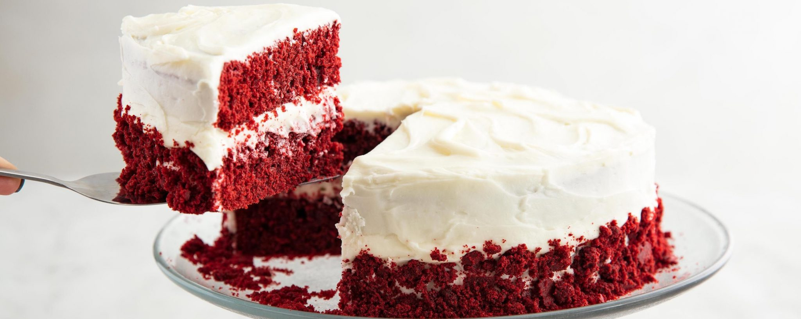

Red Velvet Cake

Description
Indigrents
For Red Velvet Cake
- 2 and 2/3 cups (295 grams) cake flour
- 1 teaspoon baking soda
- 1/4 cup (22 grams) natural unsweetened cocoa powder
- 1/2 teaspoon salt
- 1/2 cup (115 grams) unsalted butter
- 1 and 3/4 cups (350 grams) granulated sugar
- 2 large eggs room temperature
- 1/2 cup (120 ml) canola or vegetable oil
- 1 (1-ounce) bottle liquid red food color
- 2 teaspoons pure vanilla extract
- 1 teaspoon distilled white vinegar
- 1 and 1/3 cups (320 ml) buttermilk
Cream Cheese Frosting
- 12 ounces brick-style cream cheese softened
- 3/4 cup (175 grams) unsalted butter softened to room temperature
- 3 cups (360 grams) powdered sugar
- 1 and 1/2 teaspoons pure vanilla extract
Instructions
Preheat oven to 350°F (177°C). Spray two 9-inch cake pans well with nonstick cooking spray, line the bottoms of the pans with parchment paper, and set aside.
In a large mixing bowl, whisk together the cake flour, cocoa powder, baking soda, and salt. Then sift the dry ingredients to remove any lumps of cocoa powder. Set aside.
In the bowl of a stand mixer fitted with the paddle attachment, or in a large mixing bowl using an electric mixer, cream together the butter and sugar on medium speed for 4-5 minutes. Add the eggs and mix until fully combined, then mix in the oil, red food color, vanilla extract, and vinegar stopping to scrape down the sides of the bowl as needed.
Mix in the dry ingredients in three additions alternating with the buttermilk, starting and ending with the dry ingredients. Make sure to mix each addition until just combined and be careful not to over mix the batter.
Evenly distribute the cake batter between the two prepared cake pans and spread the batter around into one even layer. Tap the pans on the counter 2-3 times to remove any air bubbles from the cakes..
Bake at 350°F (177°C) for 28-32 minutes or until a toothpick inserted into the center of the cakes comes out clean. Carefully remove from the oven and place on a wire rack to cool in the pans for 15-20 minutes. Then, carefully remove the cakes from the cake pans and place on the wire rack to cool completely.
Making Cream Cheese Frosting
In the bowl of a stand mixer fitted with the paddle attachment, or in a large mixing bowl using an electric mixer, beat the cream cheese until smooth. Add the butter and mix for about 30 seconds-1 minute until well combined and smooth.
Mix in the powdered sugar and vanilla extract and continue mixing until fully combined, scraping down the sides of the bowl as needed.